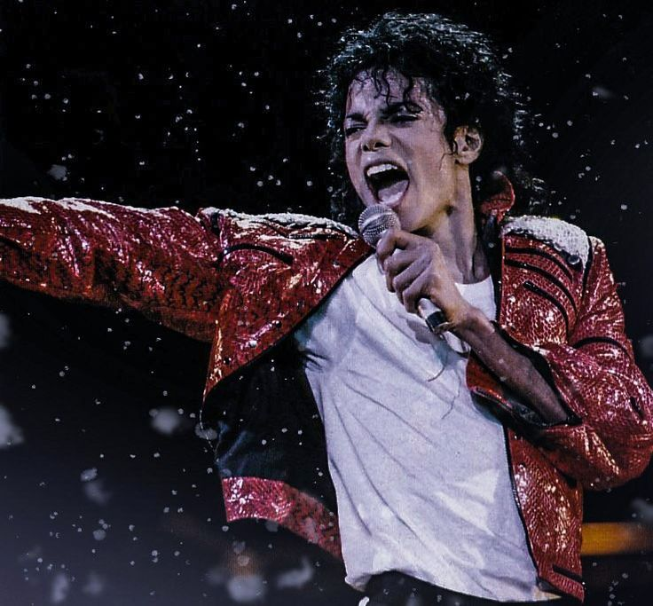

Beat It (1982)

Mezcla pop y hard rock, con un solo de guitarra que la hizo famosa. Su mensaje invita a evitar las peleas.
Datos de la canción
| FICHA TÉCNICA | ||||||||||||||||
|---|---|---|---|---|---|---|---|---|---|---|---|---|---|---|---|---|
|
Eddie Van Halen grabó el famoso solo de guitarra totalmente gratis como un favor personal a Quincy Jones, y mientras tocaba en el estudio, uno de los altavoces de control literalmente se incendió.
Escúchala en Spotify
Preguntas Frecuentes:
Eddie Van Halen, guitarrista y líder de la banda de hard rock Van Halen.
Ganó el Grammy a Grabación del Año en 1984, uno de los ocho premios que Michael recibió esa noche.
Es un mensaje contra la violencia: invita a alejarse de las peleas y no demostrar valentía con golpes.